First Bloom: deeper chest and central frill glow
The chest assembly sits farther inside the torso while retaining the 12-degree forward pitch and lower alignment. Its outer textured band shares the body skin material. Warm yellow glow covers the deeper central frill faces, fading before their exposed ivory lips; amber remains in the central cavity underneath. The fitted body flange stays attached, with no added triangles.
22 curved pale lamellae · 9,252 triangles / 1.49× Troll · 9,309 soft cap
One mesh, one material, four 512px atlas maps. All 121 structural contact records, including the complete 48-vertex cavity rim, pass the saved rest contact check. Five inherited attack samples measure at most 0.62 mm outside separation, within the 1mm tolerance.
Front attachment
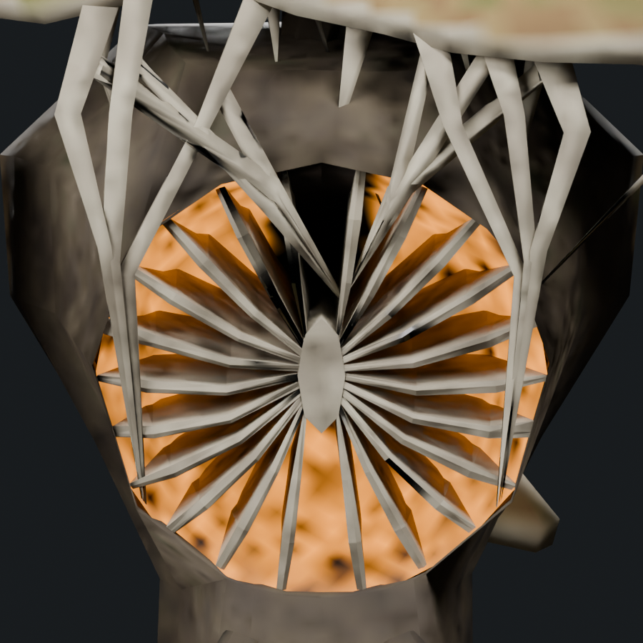
Revision 10 · previous chest position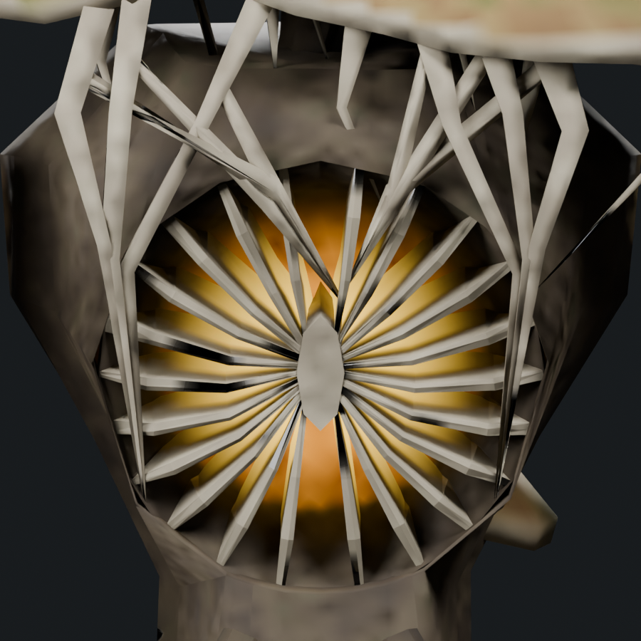
Revision 11 · recessed chest and attached lipConcept reference and revised chest and revised chest
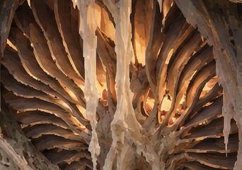
User-provided crop of the source concept · pale radial fins, recessed amber tissue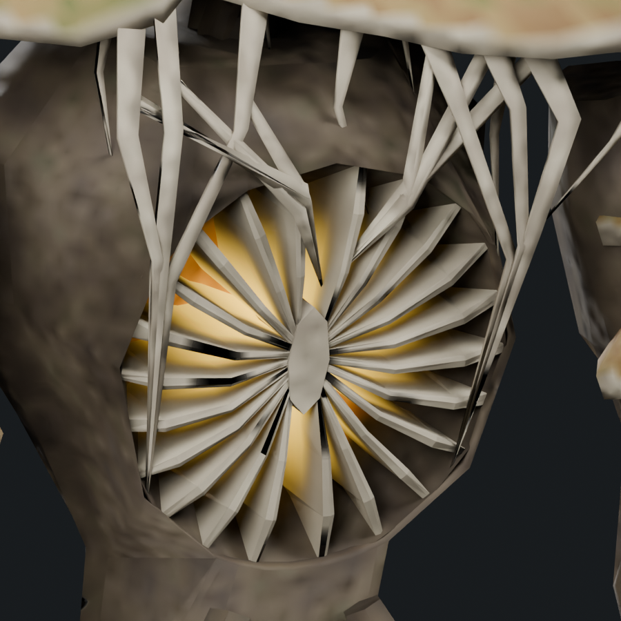
Current modeled interpretation · matched chest close-upPrevious shelves → radiating frills
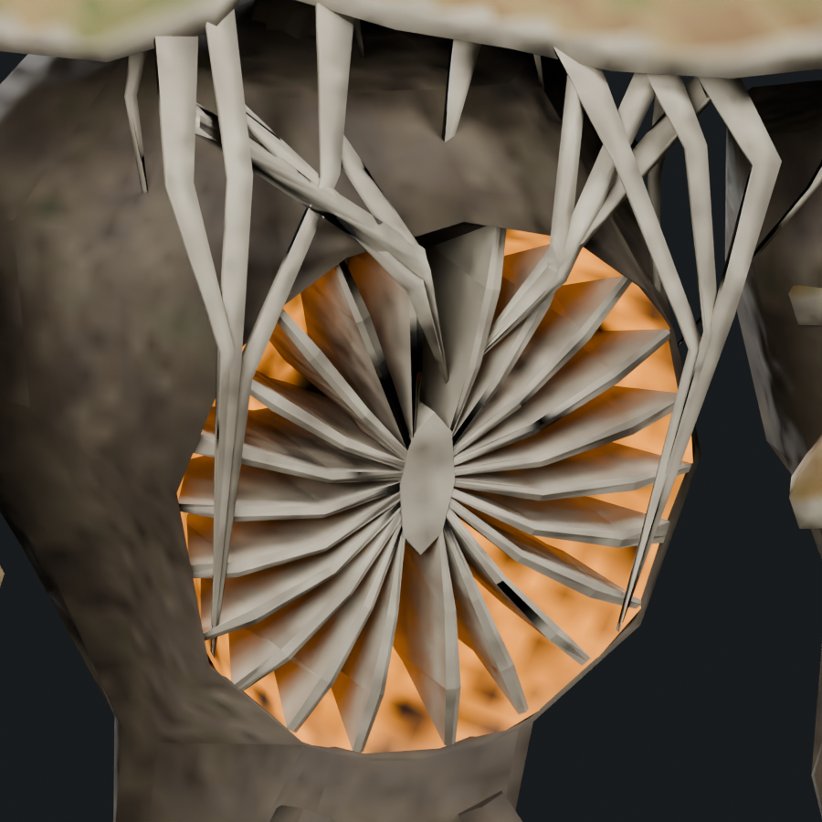
Revision 6 · separate wall shelves · texturedRevision 7 · central join and radiating fins · textured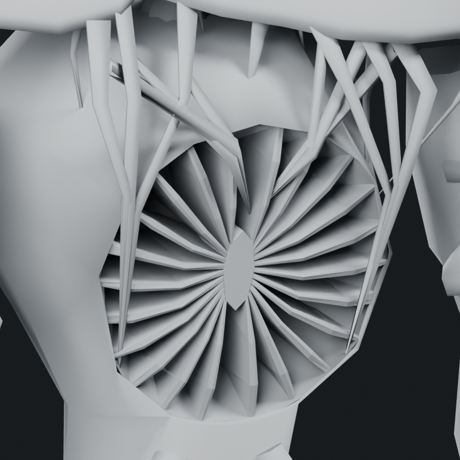
Revision 6 · separate wall shelves · clay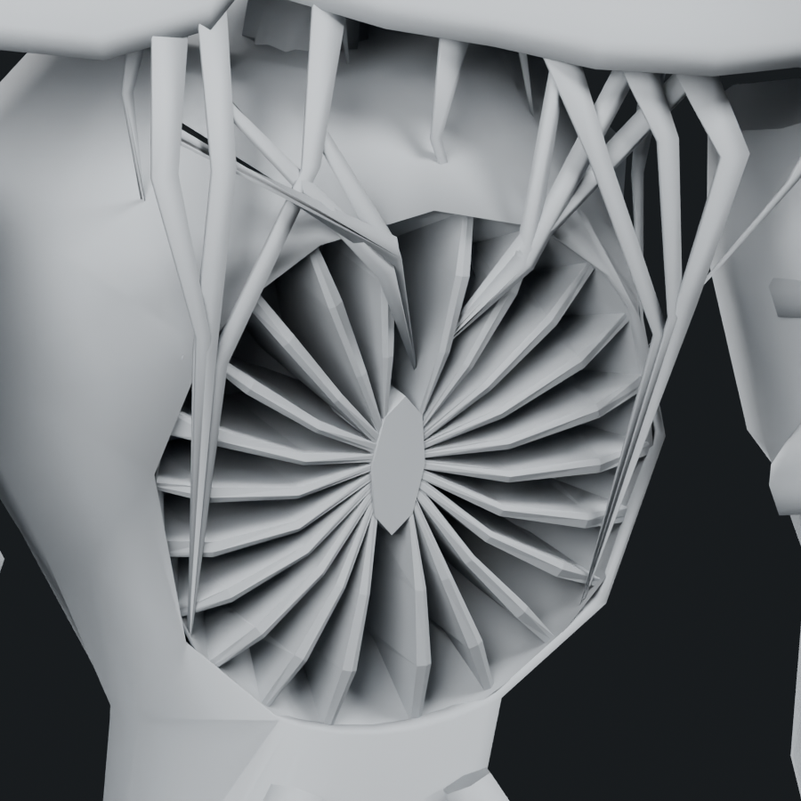
Revision 7 · central join and radiating fins · clayBody connection from the side
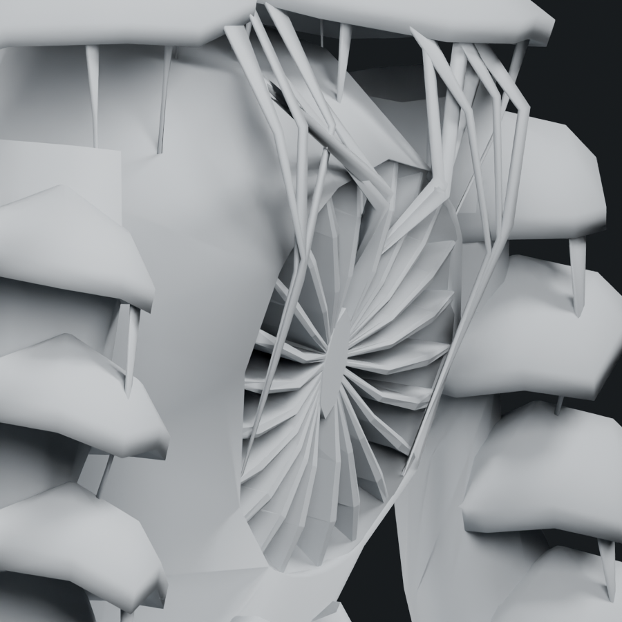
Revision 10 · previous chest depth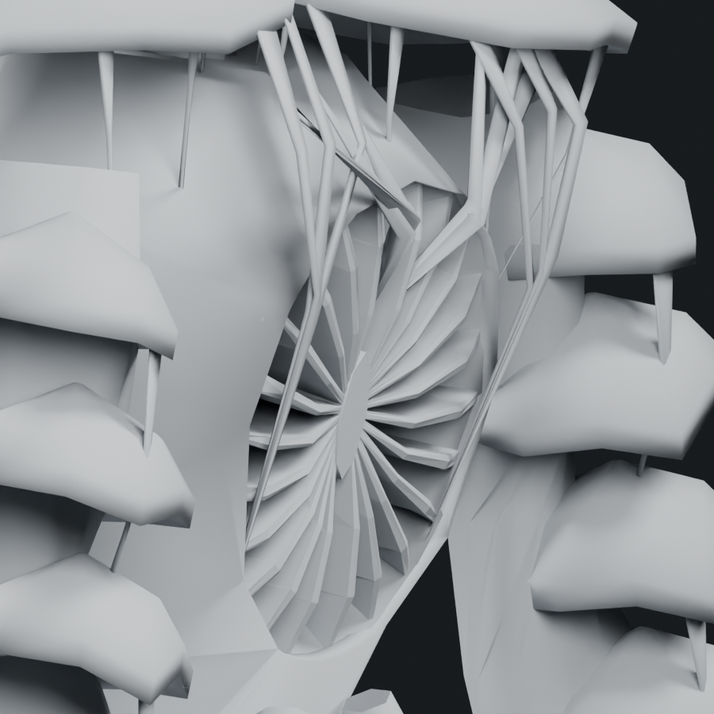
Revision 11 · pitched chest, retained body collarWhole creature profile comparison
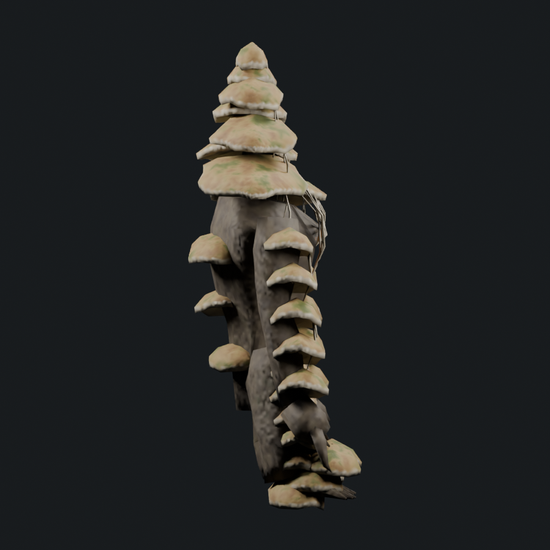
Revision 10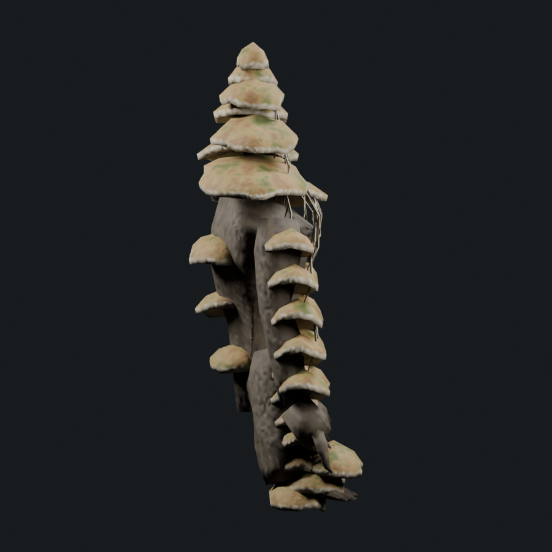
Revision 11Full concept · Editable Blender study · Skinned GLB · Inherited attack pose · Saved contact audit · Revision record
The model remains an uninstalled art study. Offline geometry and sampled contact checks do not establish visual acceptance, all-animation deformation quality or native runtime performance. Attachments intersect their supports and are not welded topology.